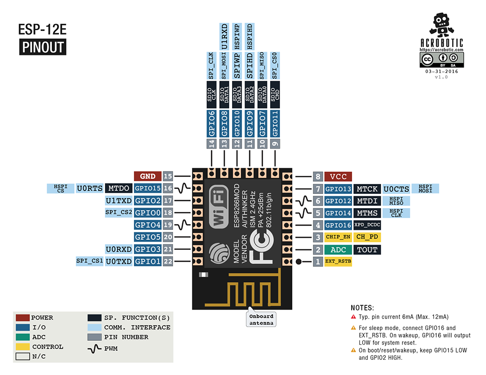

This project template is the basis of a board integrating the ESP-12F Board from AI Thinker.
This template includes the basic schematic (and routing) needed to integrate this module in your own PCB design.
Look at this beautiful pinout sourced from: Acrobotics web page

(c)2019 Maximilian Deubel